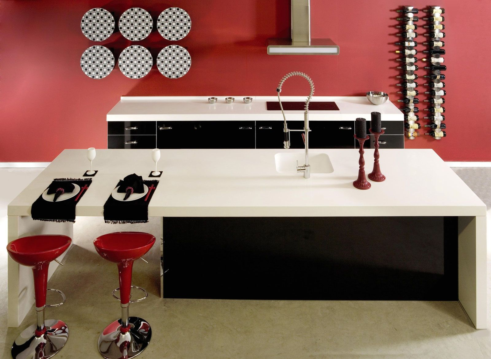

Silestone Natursteinplatten für Küche & Bad

Für hochwertige Silestone Natursteinplatten ist die Eberhard Bäder Natursteine und Glas GmbH aus der Nähe von Esslingen Ihr zuverlässiger Ansprechpartner.
Silestone ist ein innovatives Oberflächenmaterial, das aus bis zu 94 Prozent Naturquarz besteht. Diese Komponente ist es auch, die das Produkt so außergewöhnlich stabil und belastbar macht.
Silestone ist die einzige Quarzoberfläche mit einem integrierten Hygieneschutzkomplex. Dank dieser Technologie verfügen die Natursteinplatten über hervorragende hygienische Eigenschaften, die sie zu einem idealen Produkt für Küche und Bad machen. Bei uns in Altbach nahe Esslingen erhalten Sie Silestone Natursteinplatten in vielen verschiedenen Farbtönen und drei unterschiedlichen Oberflächenausführungen.
Entdecken Sie die Gestaltungsmöglichkeiten mit Natursteinplatten
Silestone bietet Ihnen eine Vielzahl von Gestaltungsmöglichkeiten: von der Küchen- oder Badabdeckung über Boden- und Wandverkleidung bis hin zum Design einer kompletten Einrichtung.
Durch die langlebigen Eigenschaften ist Silestone eine Investition in die Zukunft.
Diese Materialien haben wir im Sortiment
In Klammern: lieferbare Oberflächen.
- Altair poliert und suede
- Aluminio Nube poliert und suede
- Amarillo Palmira poliert und suede
- Amazon poliert, suede und volcano
- Arden Blue poliert, suede und volcano
- Azul Ugarit poliert und suede
- Beige Daphne poliert
- Black Dragon poliert
- Blanco Capri poliert, suede und volcano
- Blanco Maple poliert und suede
- Blanco Norte poliert und suede
- Blanco River poliert, suede und volcano
- Blanco Stellar poliert und suede
- Blanco Zeus poliert, suede und volcano
- Brazilian Brown poliert
- Carbono poliert und suede
- Cemento SPA poliert, suede und volcano
- Chrome poliert und suede
- Crema Minerva poliert und suede
- Cygnus poliert und suede
- Daria poliert und suede
- Dinux poliert und suede
- Doratus poliert und suede
- Dreis poliert und suede
- Eros Stellar poliert
- Gedatsu poliert und suede
- Giallo Nova poliert
- Gris Expo poliert, suede und volcano
- Haiku poliert, suede und volcano
- Hallay poliert
- Helix poliert und suede
- Istmo poliert und suede
- Kensho poliert, suede und volcano
- Kimbler poliert
- Kona Beige poliert und suede
- Lagoon poliert und suede
- Lyra poliert und suede
- Magenta Energy poliert
- Marron Jupiter poliert und suede
- Merope poliert und suede
- Mont Blanc poliert und suede
- Negro Anubis poliert und suede
- Negro Stellar poliert
- Negro Tebas poliert und suede
- Pulsar poliert und suede
- Quasar poliert
- Ross Monza poliert und suede
- Seleno poliert
- Steel poliert
- Tao poliert
- Tigris Sand poliert, suede und volcano
- Unsui poliert und suede
- Vortium poliert und suede
- Verde Fun poliert
- Verde Ugarit poliert und suede
- White Platinum poliert
- Yukon poliert und suede
- Zirconium poliert und suede
Kantenprofile, Ausschnitte & Sonstiges
Kantenprofile
- Profil 5: Oberseite und Unterseite mit Fasen 3 mm und Unterseite 50 mm geschliffen.
- Profil 6: Oberseite und Unterseite mit Rundung 3 mm und Unterseite 50 mm Tiefe geschliffen.
- Profil 9: Schürzenprofil auf Gehrung verklebt, oben und unten gefast oder gerundet.
- Profil 10: Vorderseite gebrochen, oben und unten gefast, Unterseite geschliffen.
- Profil Stratos: Oben und unten gefast und poliert, unten ist ein eloxiertes Aluprofil angeklebt.
Mögliche Ausschnitte
- Viereck gesägt für Auflageteile; Viereck flächenbündige Teile; Viereck für Unterbauteile
- Softeck gesägt für Auflageteile; Softeck flächenbündige Teile; Softeck für Unterbauteile
- Rund gesägt für Auflageteile; Rund flächenbündige Teile; Rund für Unterbauteile
- Eckspülenausschnitt gesägt für Aufbauteile; Eckspülenausschnitt für flächenbündige Teile
- Ovalausschnitt gesägt für Auflageteile; Ovalausschnitt für Unterbauteile
- Ablaufrillen ca. 400 x 10 mm
Sonstiges
Auch Wandabschlussprofile in 30 bis 100 mm Höhe und 10 bis 30 mm Stärke sind auf Kundenwunsch möglich.
Sprechen Sie uns an!
Besuchen Sie unsere Ausstellung in Altbach oder rufen Sie uns an – wir beraten Sie gerne persönlich.